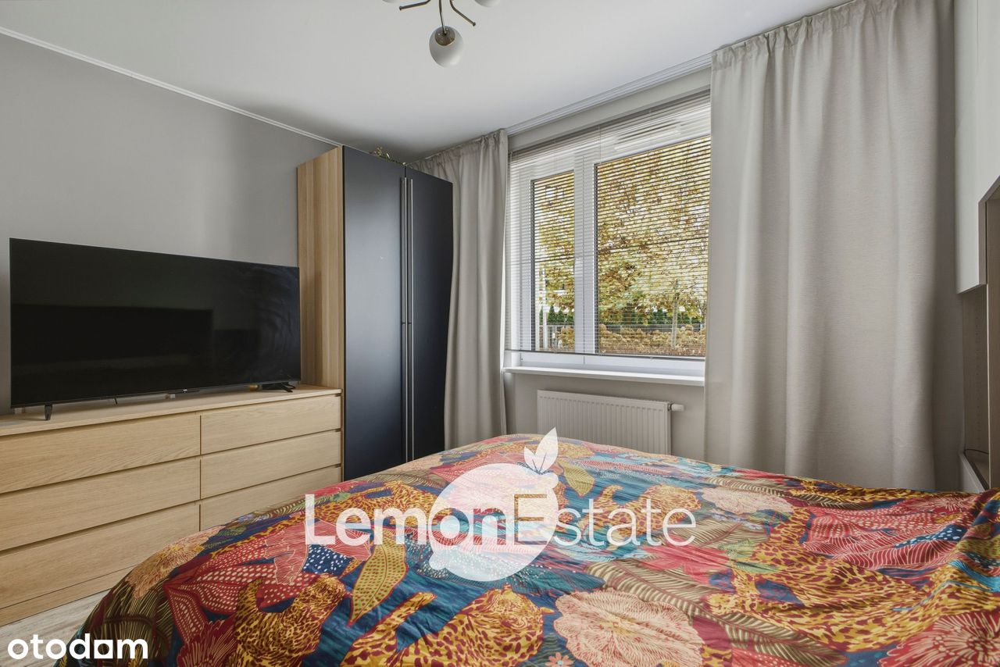
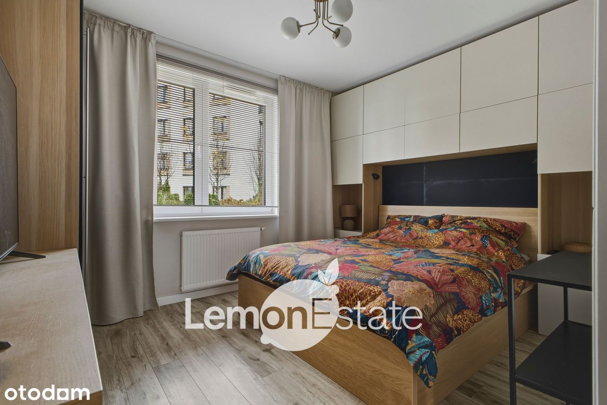
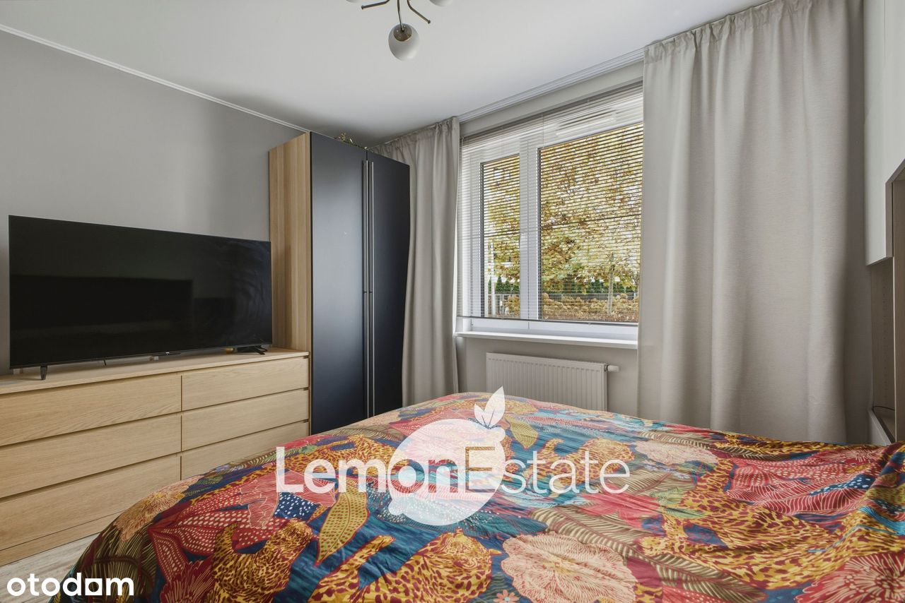
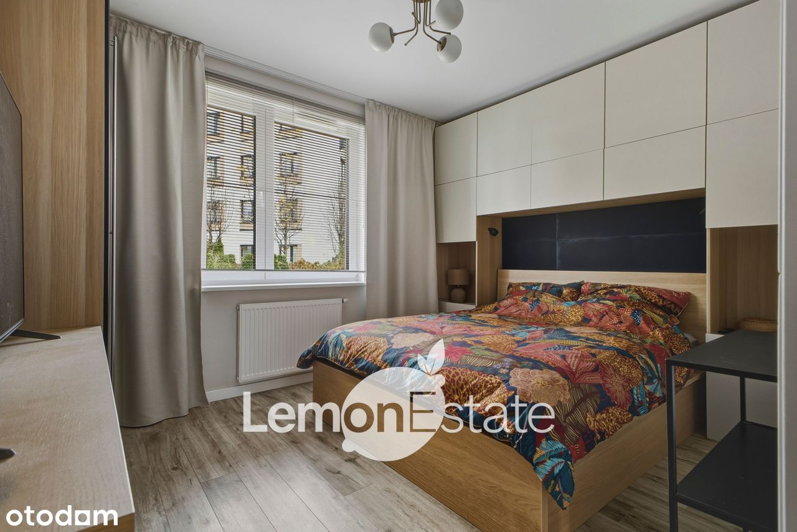
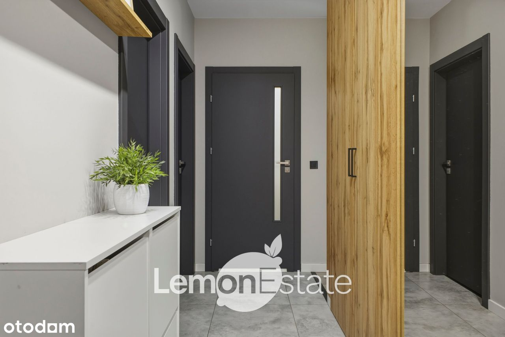
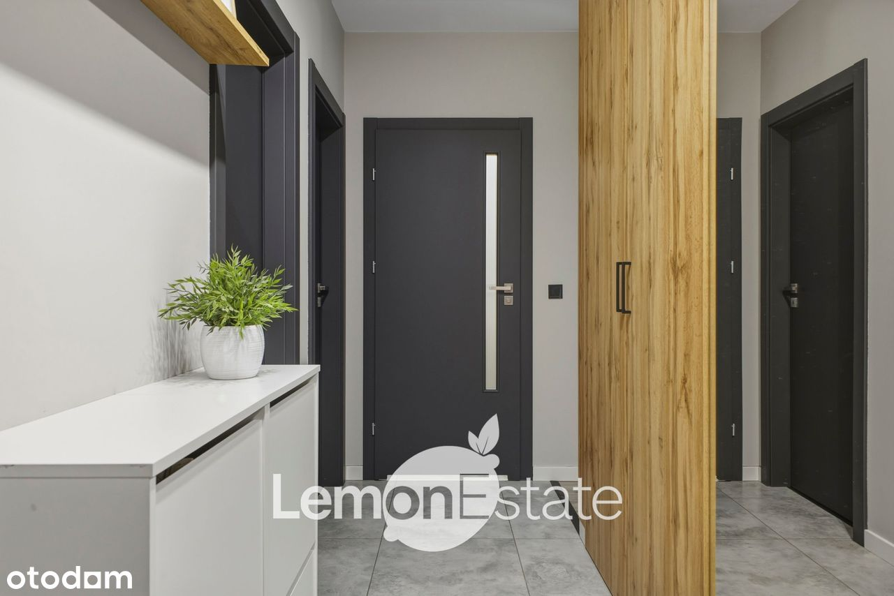
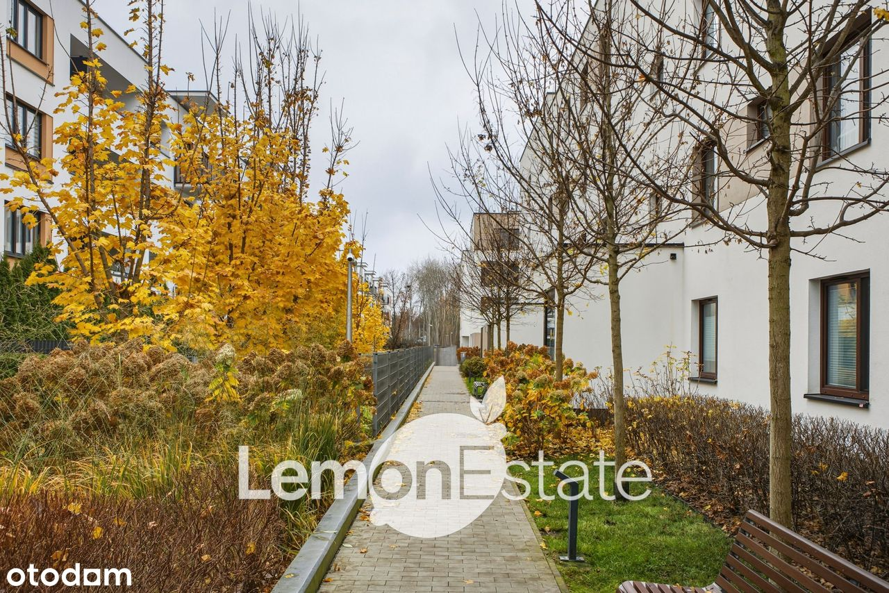
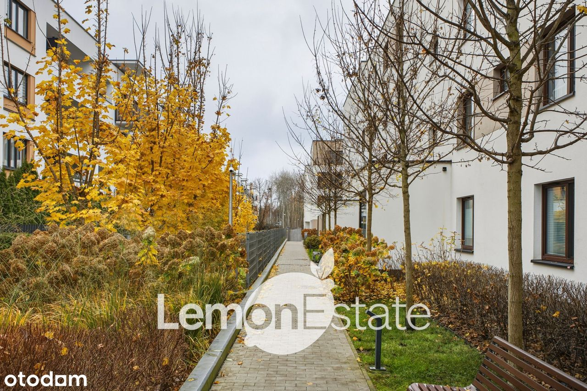

Nowoczesne 3 pokoje z ogródkiem – Osiedle Wilno, 60 m² + garaż
ul. Janowiecka, Warszawa Elsnerów
929 000 PLN
60 m2
3 pokoje
GROUND_FLOOR piętro
Osiedle Wilno – ul. Janowiecka 29B | Warszawa
Na sprzedaż nowoczesne, 3-pokojowe mieszkanie o powierzchni 60 m², położone na parterze budynku z 2020 roku. Lokal posiada taras 8 m² oraz ogródek 19 m², co zapewnia komfortową przestrzeń do wypoczynku i prywatności. Mieszkanie zostało wykończone w wysokim standardzie, jest jasne, funkcjonalne i gotowe do wprowadzenia.
Układ pomieszczeń i standard:
- salon z wyjściem na taras i ogródek
- kuchnia w zabudowie na wymiar, pełne wyposażenie AGD
- klimatyzacja dwufunkcyjna (chłodzenie i grzanie, sterowanie aplikacją)
- dwie oddzielne sypialnie
- łazienka z wanną oraz zabudową
- hol z dużą szafą
- ogródek 19 m² i taras 8 m²
- okna z szybami antywłamaniowymi, żaluzje bambusowe
Budynek i otoczenie:
- rok budowy 2020
- osiedle strzeżone, monitoring, winda
- zadbane części wspólne, plac zabaw
- pełna infrastruktura: sklepy, usługi, szkoły, przedszkola
- 6 minut pieszo do stacji KM Zacisze-Wilno, autobusy 170 i 156
- szybki dojazd do centrum i Dworca Wileńskiego
Garaż:
- Miejsce postojowe w hali garażowej stanowi element transakcji — szczegóły zakupu podczas prezentacji lub u opiekuna oferty.
Dodatkowa ważna informacja:
Możliwość zakupu mieszkania przez obcokrajowca spoza UE.
Zapraszam do kontaktu:
Jacek Cesarski
Lemon Estate


 


 



 
